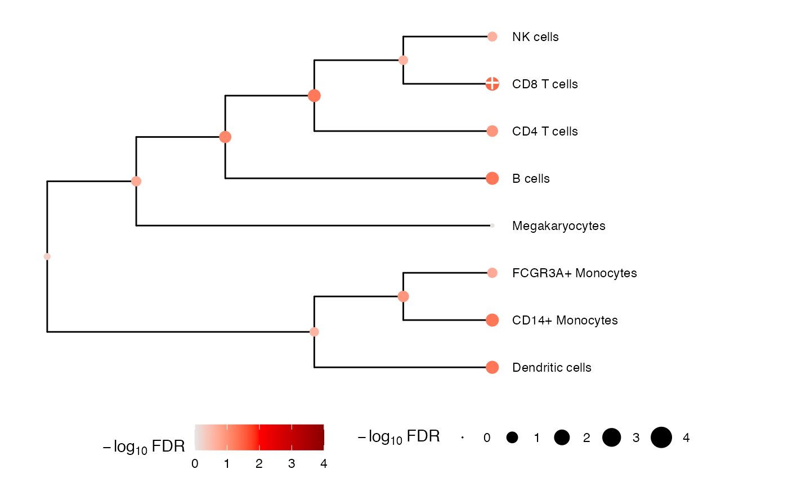

Plot tree with results from multivariate testing
Arguments
- tree
phylo object storing tree
- low
low color on gradient
- mid
mid color on gradient
- high
high color on gradient
- xmax.scale
expand the x-axis by this factor so leaf labels fit in the plot
Examples
library(variancePartition)
# Load cell counts, clustering and metadata
# from Kang, et al. (2018) https://doi.org/10.1038/nbt.4042
data(IFNCellCounts)
# Apply crumblr transformation
cobj <- crumblr(df_cellCounts)
# Use dream workflow to analyze each cell separately
fit <- dream(cobj, ~ StimStatus + ind, info)
fit <- eBayes(fit)
# Perform multivariate test across the hierarchy
res <- treeTest(fit, cobj, hcl, coef = "StimStatusstim")
# Plot hierarchy and testing results
plotTreeTest(res)

# Extract results for first 3 nodes
res[1:3, ]
#> # A tibble: 3 × 9
#> node beta se stat pvalue n_features lambda method FDR
#> <int> <dbl> <dbl> <dbl> <dbl> <dbl> <dbl> <chr> <dbl>
#> 1 1 -0.105 0.0348 -3.01 0.0137 1 0.01 FE.empirical 0.0513
#> 2 2 -0.105 0.0337 -3.12 0.0114 1 0.01 FE.empirical 0.0513
#> 3 3 -0.0784 0.0351 -2.23 0.0509 1 0.01 FE.empirical 0.109